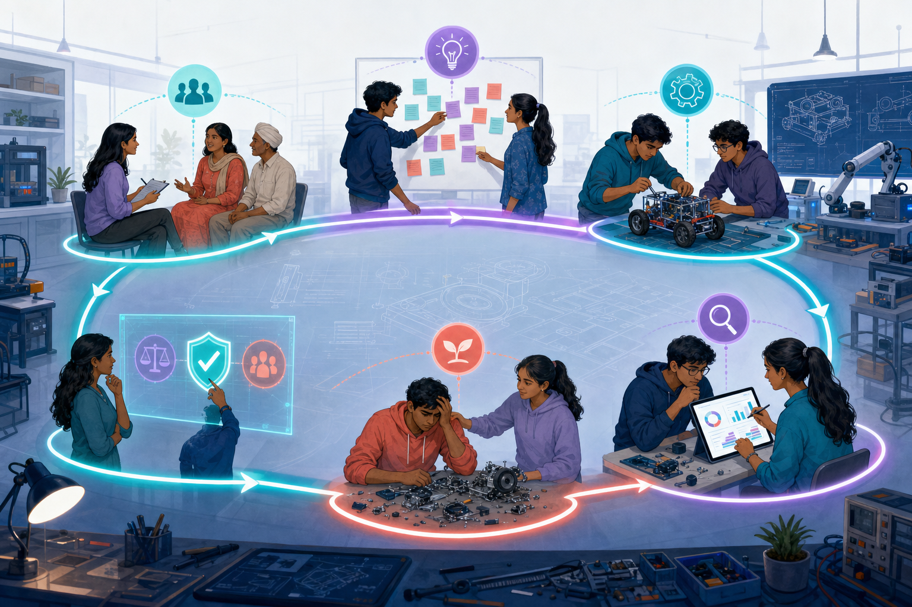

Contextual case
Connect the concept
Case connection: Greenviro Global illustrates opportunity recognition, experimentation and value creation within a local environmental constraint.
I.5 · CO1 · K2
An entrepreneurial mindset searches for possibilities, acts under uncertainty, learns from feedback and treats constraints as design inputs.

Explore the model
Use the controls to inspect each idea. Visited controls remain marked during this page visit.
Notice meaningful problems
Observe users, workarounds and consequences. Move beyond an interesting technology by asking whose problem matters, how often it occurs and what evidence shows its importance.
Understand the job
Customers adopt outcomes, not features. Listen for the job, context, constraints and current alternative before committing to requirements or a preferred solution.
Test assumptions
State an assumption, method, metric, threshold and response rule before testing. A small experiment should change a decision, not merely create activity.
Adapt from evidence
Resilience means recovering, interpreting evidence and changing weak methods while preserving a valuable purpose. Repeating an ineffective approach is not resilience.
Create responsible value
Safety, honesty, privacy and environmental responsibility are design requirements. Case: Greenviro Global links local waste, customer value and environmental purpose. Apply: What ethical threshold should not be traded for speed?
Contextual case
Case connection: Greenviro Global illustrates opportunity recognition, experimentation and value creation within a local environmental constraint.
Misconception watch
Common mistake: Equating mindset with positive thinking, motivational confidence or an unwillingness to abandon a weak idea.
Ungraded self-check
Turn one statement beginning with 'This is impossible' into a small, ethical test that could produce decision-relevant evidence.
This is formative feedback only; no answer or score is stored.
Storyline Web edition
The accessible web interaction above is ready. A published Storyline edition will appear here after its complete Web output is staged in this folder.
Alignment: CO1 - Discuss the fundamentals of entrepreneurship; K2 - Understand.
Five mindset elements and experiment discipline
Customer evidence and opportunity development
Mindset language and learner-facing framing
Template credit: Tabcordion interaction template by Montse Anderson, elearningdesigner.com
Visible instructional text is paraphrased from the supplied study material and designated references.